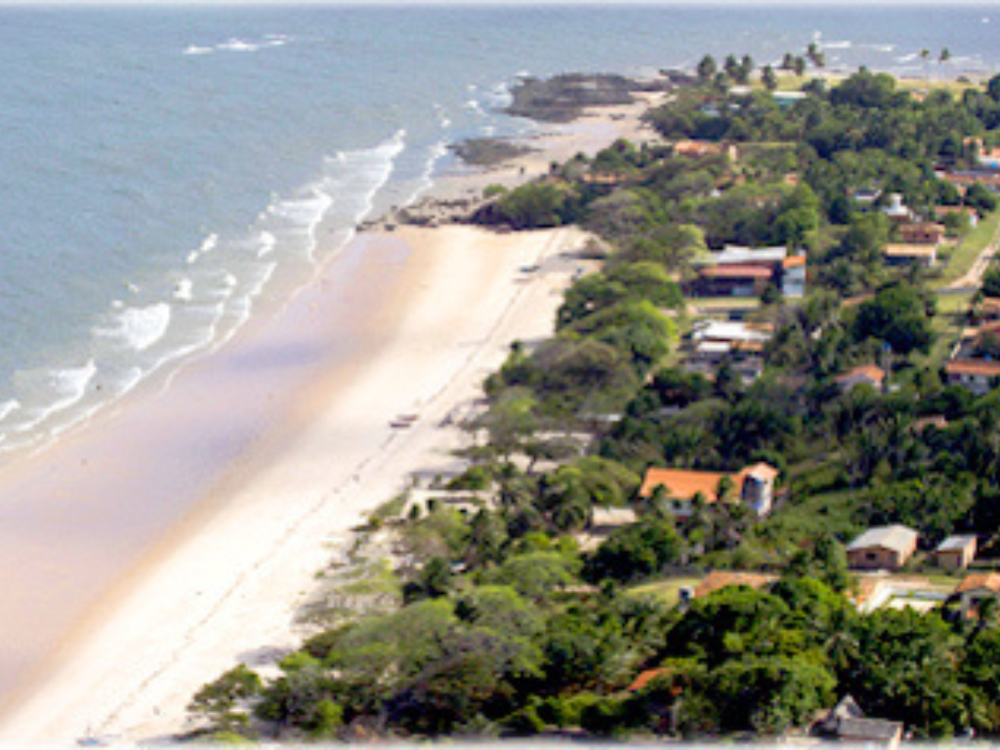

Pará é um dos estados mais importantes da região Norte tanto pela extensão territorial quanto pela força econômica e cultural. Sua capital é Belém, cidade histórica conhecida por suas tradições culturais, culinária típica e festas religiosas, como o Círio de Nazaré, uma das maiores manifestações religiosas do Brasil. O estado possui grande riqueza mineral, destacando-se na extração de ferro, bauxita e outros recursos naturais. Além disso, o Pará conta com vastas áreas de floresta amazônica e importante rede hidrográfica, que favorece atividades como pesca, transporte fluvial e geração de energia. A culinária paraense é bastante famosa, com pratos típicos preparados com ingredientes regionais como açaí, tucupi e peixe. O estado também apresenta grande diversidade cultural, marcada pela influência indígena, africana e portuguesa.
